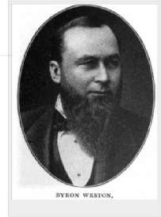

Outline of Halifax Rules

The game is played with a block of wood for a puck. The puck is not allowed to leave the ice.
The stones marking the place to score goals are placed on the ice (at right angles to those at present), parallel to the sides of the ice surface.
There is to be no slashing.
There is to be no lifting the stick above the shoulder. When a goal was scored, teams change ends.
Players must keep ‘on side’ of the puck.
The ‘forward pass’ is permitted.
All players play the entire game.
There is a no-replacement rule for penalized players.
The game is made up of two thirty-minute periods with a ten-minute break.
The goal-keeper must stand for the entire game.
Goals are decided by the goal umpires, who stand at the goal mouth and ring a handbell.